BIOLOGICAL DIVERSITY: NONVASCULAR
PLANTS AND NONSEED VASCULAR PLANTS
Table of Contents
Evolution of Plants |
The Plant Life
Cycle | Plant
Adaptations to Life on Land
Bryophytes | Tracheophytes:
The Vascular Plants | Vascular
Plant Groups | The
Psilophytes | The
Lycophytes
The Sphenophyta |
The Ferns | Learning
Objectives | Terms |
Review Questions |
Links
The plant kingdom contains multicellular
phototrophs
that usually live on land. The earliest plant fossils are from
terrestrial deposits, although some plants have since returned to the
water. All plant cells have a cell
wall containing the carbohydrate
cellulose,
and often have plastids
in their cytoplasm. The plant life cycle has an alternation between
haploid
(gametophyte)
and diploid
(sporophyte)
generations. There are more than 300,000 living species of plants
known, as well as an extensive fossil record.
Plants divide into two groups: plants lacking
lignin-impregnated
conducting cells (the nonvascular plants) and those containing
lignin-impregnated conducting cells (the vascular plants). Living
groups of nonvascular plants include the bryophytes:
liverworts, hornworts, and mosses. Vascular plants are the more
common plants like pines, ferns, corn, and oaks. The phylogenetic
relationships within the plant kingdom are shown in Figure 1.
|
Figure 1. Phylogenetic reconstruction of
the possible relationships between plant groups and their
green algal ancestor. Note this drawing proposes a green
algal group, the Charophytes, as possible ancestors for the
plants. Image from Purves et al., Life: The Science of
Biology, 4th Edition, by Sinauer Associates
(www.sinauer.com)
and WH Freeman (www.whfreeman.com),
used with permission.
|

|
Fossil and biochemical evidence indicates plants
are descended from multicellular green algae. Various green algal
groups have been proposed for this ancestral type, with the
Charophytes often being prominently mentioned. Cladistic studies
support the inclusion of the Charophytes (including the taxonomic
order Coleochaetales) as sister taxa to the land plants. Algae
dominated the oceans of the precambrian time over 700 million years
ago. Between 500 and 400 million years ago, some algae made the
transition to land, becoming plants by developing a series of
adaptations to help them survive out of the water.
Table 1. Photosynthetic pigments of algae
and plants. Prokaryote groups are shown in red, protists in blue, and
vascular plants in purple.
|
Taxonomic
Group
|
Photosynthetic
Pigments
|
|
Cyanobacteria
|
chlorophyll a, chlorphyll c, phycocyanin,
phycoerythrin
|
|
Chloroxybacteria
|
chlorophyll a, chlorphyll b
|
|
Green Algae (Chlorophyta)
|
chlorophyll a, chlorphyll b,
carotenoids
|
|
Red Algae (Rhodophyta)
|
chlorophyll a, phycocyanin, phycoerythrin,
phycobilins
|
|
Brown Algae (Phaeophyta)
|
chlorophyll a, chlorphyll c, fucoxanthin and other
carotenoids
|
|
Golden-brown Algae (Chrysophyta)
|
chlorophyll a, chlorphyll c, fucoxanthin and other
carotenoids
|
|
Dinoflagellates (Pyrrhophyta)
|
chlorophyll a, chlorphyll c, peridinin and
other carotenoids
|
|
Vascular Plants
|
chlorophyll a, chlorphyll b,
carotenoids
|
Vascular plants appeared by 350 million years ago,
with forests soon following by 300 million years ago.
Seed plants next evolved, with flowering plants
appearing around 140 million years ago. This pattern is shown in
Figure 2.
|
Figure 2. The fossil records of some
protist and plant groups. The width of the shaded space is
an indicator of the number of species. Image from Purves et
al., Life: The Science of Biology, 4th Edition, by
Sinauer Associates (www.sinauer.com)
and WH Freeman (www.whfreeman.com),
used with permission.
|
|
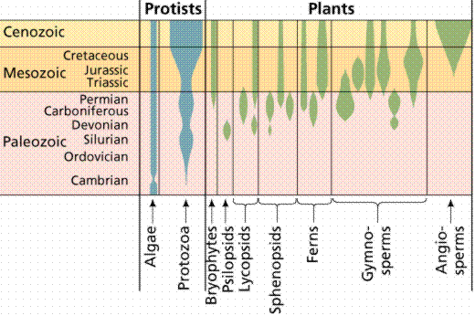
|
The Plant Life
Cycle | Back
to Top
Plants have an alternation of generations: the
diploid spore-producing plant (sporophyte) alternates with the
haploid gamete-producing plant (gametophyte), as shown in Figure 3.
Animal life cycles have meiosis
followed immediately by gametogenesis. Gametes
are produced directly by meiosis. Male gametes are sperm. Female
gametes are eggs or ova.
|
Figure 3. Typical alternation of
generations life cycle, such as occur in some protistans and
plants. Image from Purves et al.,
Life: The Science of Biology, 4th Edition, by Sinauer
Associates (www.sinauer.com)
and WH Freeman (www.whfreeman.com),
used with permission.
|
|
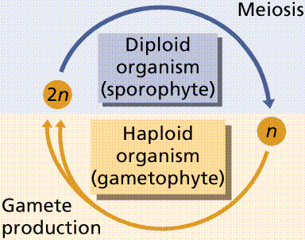
|
The plant life cycle has mitosis occurring in
spores,
produced by meiosis, that germinate into the gametophyte
phase. Gametophyte size ranges from three cells (in pollen)
to several million (in a "lower plant" such as moss).
Alternation
of generations occurs in plants, where the
sporophyte
phase is succeeded by the gametophyte phase. The sporophyte phase
produces spores by meiosis within a sporangium.
The gametophyte phase produces gametes by mitosis within an
antheridium (producing sperm) and/or archegonium (producing eggs).
These different stages of the flowering plant life cycle are shown in
Figure 4. Within the plant kingdom the dominance of phases varies.
Nonvascular
plants, the mosses and liverworts, have
the gametophyte phase dominant. Vascular
plants show a progression of increasing
sporophyte dominance from the ferns and "fern allies" to
angiosperms.
Homospory and Heterospory
Plants have two further variations on their life
cycles. Plants that produce bisexual gametophytes have those
gametophytes germinate from isospores (iso=same) that are
about all the same size. This state is referred to as homospory
(sometimes referred to as isospory). A generalized homosporous plant
life cycle is shown in Figure 5. Homosporous plants produce bisexual
gametophytes. Ferns are a classic example of a homosporous plant.
|
Figure 5. A typical homosporous life
cycle. Note the production of a single type of bisexual
gametophyte that will eventually produce the antheridia
(sperm bearing structures) and archegonia (egg bearing
structures). Image from Purves et al., Life: The Science
of Biology, 4th Edition, by Sinauer Associates
(www.sinauer.com)
and WH Freeman (www.whfreeman.com),
used with permission.
|
|
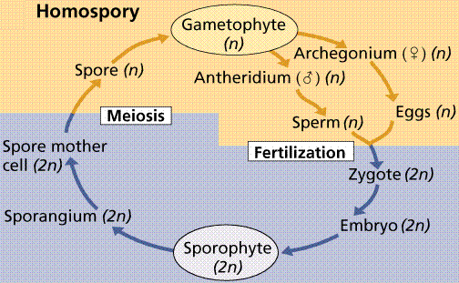
|
Plants that produce separate male and female
gametophytes have those gametophytes germinate from (or within in the
case of the more advanced plants) spores of different sizes
(heterospores; hetero=different). The male gametophyte
produces sperm, and is associated with smaller or microspores.
The female gametophyte is associated with the larger or
megaspores.
Heterospory is considered by botanists as a significant step toward
the development of the seed. A generalized heterosporous life cycle
is shown in Figure 6.
|
Figure 6. Typical heterosporous life
cycle. Note the production of separate, unisexual male and
female gametophytes. Image from
Purves et al., Life: The Science of Biology, 4th
Edition, by Sinauer Associates (www.sinauer.com)
and WH Freeman (www.whfreeman.com),
used with permission.
|
|
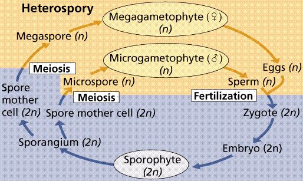
|
Plant
Adaptations to Life on Land | Back
to Top
Organisms in water do not face many of the
challenges that terrestrial creatures do. Water supports the
organism, the moist surface of the creature is a superb surface for
gas exchange, etc. For organisms to exist on land, a variety of
challenges must be met.
- Drying out. Once removed from water and
exposed to air, organisms must deal with the need to conserve
water. A number of approaches have developed, such as the
development of waterproof skin (in animals), living in very moist
environments (amphibians, bryophytes), and production of a
waterproof surface (the cuticle
in plants, cork
layers and bark
in woody trees).
- Gas exchange. Organisms that live in water are
often able to exchange carbon dioxide and oxygen gases through
their surfaces. These exchange surfaces are moist, thin layers
across which diffusion
can occur. Organismal response to the challenge of drying out
tends to make these surfaces thicker, waterproof, and to retard
gas exchange. Consequently, another method of gas exchange must be
modified or developed. Many fish already had gills and swim
bladders, so when some of them began moving between ponds, the
swim bladder (a gas retention structure helping buoyancy in the
fish) began to act as a gas exchange surface, ultimately evolving
into the terrestrial lung. Many arthropods had gills or other
internal respiratory surfaces that were modified to facilitate gas
exchange on land. Plants are thought to share common ancestry with
algae. The plant solution to gas exchange is a new structure, the
guard
cells that flank openings
(stomata)
in the above ground parts of the plant. By opening these guard
cells the plant is able to allow gas exchange by diffusion through
the open stomata.
- Support. Organisms living in water are
supported by the dense liquid they live in. Once on land, the
organisms had to deal with the less dense air, which could not
support their weight. Adaptations to this include animal skeletons
and specialized plant cells/tissues that support the plant.
- Conduction. Single celled organisms only have
tyo move materials in, out, and within their cells. A
multicellular creature must do this at each cell in the body, plus
move material in, out, and within the organism. Adaptations to
this include the circulatory
systems of animals, and the specialized
conducting tissues xylem
and phloem
in plants. Some multicellular algae and bryophytes also have
specialized conducting cells.
- Reproduction. Organisms in water can release
their gametes into the water, where the gametes will swim by
flagella
until they ecounter each other and fertilization happens. On land,
such a scenario is not possible. Land animals have had to develop
specialized reproductive
systems involving fertilization when
they return to water (amphibians), or internal fertilization and
an amniotic
egg (reptiles, birds, and mammals).
Insects developed similar mechanisms. Plants have also had to deal
with this, either by living in moist environments like the ferns
and bryophytes do, or by developing specialized delivery systems
like pollen
tubes to get the sperm cells to the
egg.
Bryophytes are small, nonvascular plants that
first evolved approximately 500 million years ago.
The earliest land plants were most likely bryophytes.
Bryophytes lack vascular tissue and have life cycles dominated by the
gametophyte phase, as shown in Figure 7. The lack of conducting cells
limits the size of the plants, generally keeping them under 5 inches
high. Roots are absent in bryophytes, instead there are root-like
structures known as rhizoids.
Bryophytes include the hornworts, liverworts, and
mosses.
|
Figure 7. The moss life cycle. The
haploid gametophyte phase is free-living and photosynthetic.
The diploid sporophyte grows from and is nourished by the
gametophyte. Images from Purves et
al., Life: The Science of Biology, 4th Edition, by
Sinauer Associates (www.sinauer.com)
and WH Freeman (www.whfreeman.com),
used with permission.
|
|
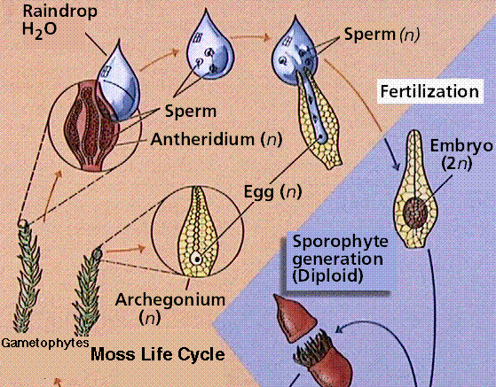
|
|
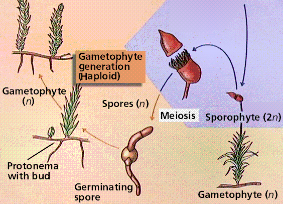
|
Tracheophytes:
The Vascular Plants | Back to
Top
The vascular
plants have specialized transporting cells
xylem (for transporting water and mineral nutrients) and phloem (for
transporting sugars from leaves to the rest of the plant). When we
think of plants we invariably picture vascular plants. Vascular
plants tend to be larger and more complex than bryophytes, and have a
life cycle where the sporophyte is more prominent than the
gametophyte. Vascular plants also demonstrate increased levels of
organization by having organs and organ systems. The novel features
oif the vascular plants are summarized in Table 2.
Table 2. Major evolutionary advances of the
vascular plants.
|
Advance
|
Green Algae
|
Bryophytes
|
Tracheophytes
|
|
Development of the root-stem-leaf vascular system
|
nonvascularized body (thallus) that may be variously
shaped
no levaes, shoots, or roots
|
no vascular system
leaflike structures are present, but lack any vascular
tissue
|
early vascular plants are naked, rootless vascularized
stems
later vascular plants develop vascularized leaves, then
roots
|
|
Reduction in the size of the gametophyte generation
|
wide range of life cycles, some gametophyte dominant,
others sporophyte dominant
|
sporophyte generation dependant on gametophyte generation
for food; gametophyte is free-living and photosynthetic
|
progressive reduction in size and complexity of the
gametoiphyte generation, leading to its complete dependance
on the sporophyte for food
in angiosperms, 3 celled male gametophyte and a (usually)
8 celled female gametophyte
|
|
Development of seeds in some vascular plants
|
no seeds
|
no seeds
|
seed plants retain the female gametophyte on the
sporophyte
|
|
Spores/Pollen
|
spores for resisting environmental degradation
|
Spores that germinate into the gametophyte generation
|
Spores that germinate into the gametophyte generation or
spores that have the gametophyte generation develop within
themselves
|
Vascular
Plant Groups | Back to
Top
Vascular plants first developed during the
Silurian
Period, about 400 million years ago. The
earliest vascular plants had no roots, leaves, fruits, or flowers,
and reproduced by producing spores.
Cooksonia, shown in Figure 8, is a typical
early vascular plant. It was less than 15 cm tall, with stems that
dichotomously branched. Dichotomous branching (where the stem divides
into two ewqual branches) appears a primitive or ancestral trait in
vascular plants. Some branches terminated in sporangia that produced
a single size of spore.
Many scientists now consider "Cooksonia" an
evolutionary grade rather than a true monophyletic taxon. Their main
argument is that not all stems of Cooksonia-type plants have
vascular tissue. The evolutionary situation of a grade would have
some members of the group having the trait, others not. The shapes of
sporangia on various specimens of Cooksonia also vary
considerably.
Rhynia, shown in Figure 9, is another early
vascular plant. Like Cooksonia, it lacked leaves and roots.
One of the species formerly assigned to this genus, R. major,
has since been reclassified as Aglaophyton major. Some
paleobotanists consider A. major (Figure 10) a bryophyte,
however, it does have a separate free-living sporophyte that is more
prominent than the sporophyte, but appears to lack lignified
conducting cells. The remaining species, R. gwynne-vaughanii
is an undoubted vascular plant.
|
Figure 10. Reconstruction of
Aglaophyton major (A-C) and Lyonophyton
rhyniensis, another Rhynie Chert plant thought to be the
gametophyte of Aglaophyton.
Image from the UCMP Berkeley
website.
|
|
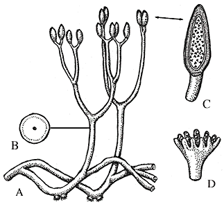
|
Devonian plant lines included the trimerophytes
and zosterophyllophytes, which have been interpreted as related to
ferns and lycophytes.
The Division Psilophyta consists of Psilotum
nudum (the whisk fern, shown in Figure 11), a living plant that
resembling what paleobotanists believe Cooksonia to have been:
a naked, photosynthetic stem bearing sporangia. Also in the group is
Tmesipteris, which resembles Psilotum except for its
possession of smallo vascularized leaves arising on opposite sides of
the stem. However, most paleobotanists doubt that Psilotum is
a direct descendant of Cooksonia. Molecular studies suggest an
affiliation with ferns for Psilotum. Psilotum also has three
fused sporangia, termed a synangium, located on the sides of the
stems (instead of the tips of stems as in Cooksonia).
The next group, the Division Lycophyta, have their
sporangia organized into strobili (singular: strobilus). A strobilus
is a series of sporangia and modified leaves closely grouped on a
stem tip. The leaves in strobili are soft and fleshy as opposed to
the hard, modified leaves in cones.
Leaves that contained vascular tissue are another
major advance for this group. The presumed evolutionary pathway for
the leaf is shown in Figure 12. The leaves in lycophytes, both living
and fossil forms, are known as microphylls. This term does not imply
any size constraint, but rather refers to the absence of a leaf gap
in the vascular supply of the stem at the point where the leaf
vascular trace departs. Ferns and other plants have megaphylls,
leaves that produce this leaf gap.
|
Figure 12. Proposed steps in the
evolution of the microphyll leaf. Note that microphylls do
not leave a leaf gap in the stem's vascular cylinder. If we
wanted to place Psilotum-like plants on the left top,
we would have Lycopodium-like plants on the right
top. Image from Purves et al.,
Life: The Science of Biology, 4th Edition, by Sinauer
Associates (www.sinauer.com)
and WH Freeman (www.whfreeman.com),
used with permission.
|
|
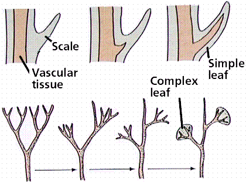
|
Today there are fewer genera of lycophytes than
during the group's heyday, the Paleozoic Era. Major living lycophytes
include Lycopodium (commonly called the club moss [shown
in Figure 13], although it is NOT a moss), Isoetes, and
Selaginella (the so-called resurrection plant).
Lycopodium produces isospores that germinate in the soil and
produce a bisexual gametophyte. These spores are all approximately
the same size. Selaginella and Isoetes are
heterosporous, and thus produce two sizes of spores: small spores
(termed microspores) that germinate to produce the male gametophyte;
and larger spores (megaspores) that germinate to produce the female
gametophyte. The production of two sizes of spores, and also making
separate unisexual gametophytes, is thought an important step toward
the seed. Modern lycophytes are small, herbaceous plants. Many of the
prominent fossil members of this group produced large amounts of wood
and were significant trees in the Carboniferous-aged coal swamps.
Selaginella is a heterosporous member of the
lycophytes. Some species of this genus are able to withstand drying
out by going dormant until they are rehydrated. For this reason these
forms of the genus are commonly called resurrection plants. An
example of this is shown in Figure 14.
Fossil Lycophytes: Baragwanathia and
Drepanophycus
Baragwanathia, shown in Figure 15, is an
undoubted lycophyte from the middle Silurian
deposits of Australia. It has microphyllous leaves spirally attached
to the stem, and sporangia clustered in some areas of the plant,
although not in terminal strobili as in modern lycophytes.
Drepanophycus is a middle Devonian
lycophyte from the Northern Hemisphere, also shown in Figure 15. Its
features are very similar to modern lycophytes.
Lepidodendron and
Sigillaria
The Lycophytes became significant elements of the
world's flora during the Carboniferous time (the Mississippian and
Pennsylvanian are terms used for this time span in the United
States). These non-seed plants evolved into trees placed in the
fossil genera Lepidodendron and Sigillaria, with
heights reaching up to 40 meters and 20-30 meters respectively.
Lepidodendron stems are composed of less wood (secondary
xylem) that usually is found in gymnosperm and angiosperm
trees.
We know much about the anatomy of these coal-age
lycopods because of an odd type of preservation known as a coal ball.
Coal balls can be peeled and the plants that are anatomically
preserved within them laboriously studied to learn the details of
cell structure of these coal age plants. Additionally, we have some
exceptional petrifactions and compressions that reveal different
layers of the plants' structure. Estimates place the bulk, up to 70%,
of coal material as being derived from lycophytes.
Lepidodendron, pictured in Figures 16 and
17, was a heterosporous lycophyte tree common in coal swamps of the
Carboniferous time. As with many large plant fossils, one rarely if
ever finds the entire tree preserved intact. Consequently there are a
number of fossil plant genera that are "organ taxa" and represent
only the leaves (such as Lepidophylloides), reproductive
structures (Lepidostrobus), stem (Lepidodendron),
spores (Lycospora), and roots (Stigmaria).
Lepidodendron had leaves borne spirally on branches that
dichotomously forked, with roots also arising spirally from the
stigmarian axes, and both small (microspores) and large (megaspores)
formed in strobili (a loose type of soft cone). Lepidodendron
may have attained heigths of nearly 40 meters, with trunks nearly 2
meters in diameter. The trees branched extensively and produced a
large number of leaves. When these leaves fell from the branches,
they left behind them the leaf scars characteristic of the genus.
|
Figure 16. External stem features typical
of arborescent lycopods, collectively called lepidodendrids,
based on the diamond-shaped "snakeskin" type pattern
produced by the helically arranged leaf cushions. On the
left is a lower magnification view of this type of pattern,
showing the general features of many of these trees. Each
leaf abscissed, so that if you are looking, as you are here,
at the outside of the stem, you can see a characteristic
appearance. On the right is a higher magnification photo
showing details of leaf cushions. Each diamond shaped
cushion has a smaller central area called the leaf base
where the leaf attached. In the center of the leaf base you
can see the leaf trace, or vein to the leaf. The vertical
stripe running down each cushion is probably the result of
increased girth from secondary cortical growth inside the
stem. Images and text from
http://lsvl.la.asu.edu/plb407/kpigg/lepidodendrid.htm,
used with permission of K.B. Pigg, Arizona State
University.
|

|
|
Figure 17. Top: Cross section through a
branch (approximately an inch in diameter) of a large
lepidodendrid tree. In the very center is a pith, surrounded
by primary xylem and a small fringe of secondary xylem
[wood, MJF]. Then there is black gunk and an open
white area. Phloem and innermost cortical tissues are
typically not well preserved, and this black gunk and white
areas probably represent their positions in the branch. The
outermost part of the stem is gone. Images and text from
http://lsvl.la.asu.edu/plb407/kpigg/lepidostemxs.htm,
used with permission of K.B. Pigg, Arizona State University.
Bottom: Reconstructed diorama of Carboniferous forest
scene. Note the ferns and sphenopsids growing around
the fallen Lepidodendron trunk, and a large calamite
tree in the right foreground. Image and text from
http://seaborg.nmu.edu/earth/carbonif/car01b.html.
|

|

|
Sigillaria was another arborescent lycopod,
and is also common in coal-age deposits. In contrast to the spirally
borne leaves of Lepidodendron, Sigillaria had leaved
arranged in vertical rows along the stem.
The Division Sphenophyta contains once dominant
plants (both arborescent as well as herbaceous) in Paleozoic forests,
equisetophytes are today relegated to minor roles as herbaceous
plants. Today only a single genus, Equisetum, survives. The
group is defined by their jointed stems, with many leaves being
produced at a node, production of isospores in cones borne at the
tips of stems, and spores bearing elaters (devices to aid in spore
dispersal). Sporophyte features are seen in Figure 18. The
gametophyte is small, bisexual, photosynthetic, and free-living.
Silica concentrated in the stems give this group one of their common
names: scouring rushes. These plants were reportedly used by American
pioneers to scour the pots and pans. The fossil members of this group
are often encountered in coal deposits of Carboniferous age in North
America and Europe.
Ferns reproduce by spores from which the
free-living bisexual gametophyte generation develops. There are
12,000 species of ferns today, placed in the Division Pteridophyta.
The fossil history of ferns shows them to have been a dominant plant
group during the Paleozoic Era. Most ferns have pinnate leaves,
exhibiting small leaflets on a frond, as shown in Figure 19. Ferns
have megaphyllous leaves, which cause a leaf gap in the vascular
cylinder of the stem/rhizome, as shown in Figure 20. The first ferns
also appear by the end of the Devonian. Some anatomical similarities
suggest that ferns and sphenophytes may have shared a common ancestor
within the trimerophytes.
|
Figure 20. Formation of leaf gaps by a
megaphyllous leaf. Most plants above the ferns have
megaphyllous leaves. Image from Purves et al., Life: The
Science of Biology, 4th Edition, by Sinauer Associates
(www.sinauer.com)
and WH Freeman (www.whfreeman.com),
used with permission.
|
|
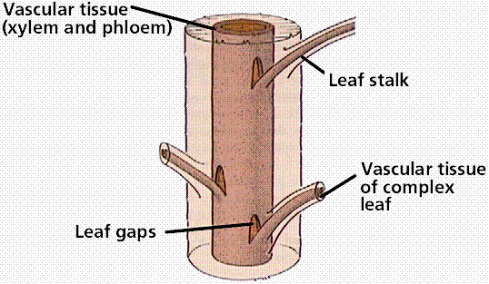
|
The Fern Life Cycle
The fern gametophyte has both sexes present and is
referred to as a prothallium. Prothallia
develop from spores shed from the underside of the sporophyte leaves,
shown in Figure 21. Once fertilization occurs, the next generation
sporophyte develops from the egg located in the
prothallium.
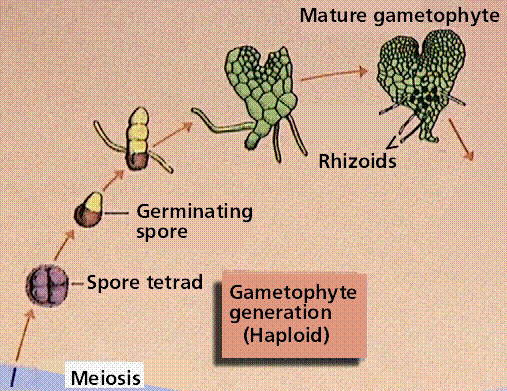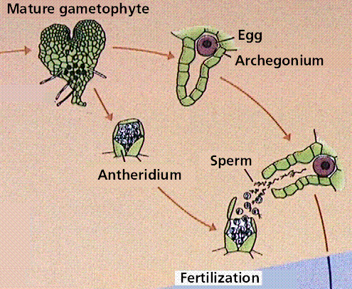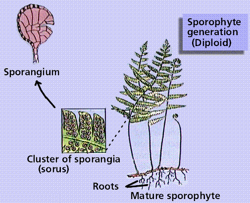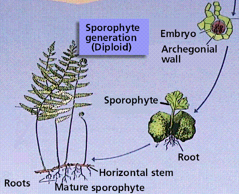
Composite of 4 segmented diagrams of the fern life
cycle. Note: to view this in its proper sequence you will need to
open your browsert window as wide as possible.
Images from Purves et al., Life: The Science of
Biology, 4th Edition, by Sinauer Associates (www.sinauer.com)
and WH Freeman (www.whfreeman.com),
used with permission.
- Be able to discuss the differences in life cycle between
vascular and nonvascular plants.
- Both bryophytes and vascular plants have leaf-like structures.
Be able to prepare a single sentence that can tell the reader what
a leaf is, as well as what it is not.
- Both heterospory and homospory impose certain constraints on
the gametophyte generation. List some of these.
- Be able to compare and contrast the typical plant life cycle
and a typical animal one.
- Psilotum is NOT a primitive vascular plant, but rather
has more genetic similarity to ferns. What sorts of information
might we gather from studying modern Psilotum and its
ecology as it relates to Cooksonia and other early vascular
plants.
- What are the chief differences between vascular and
nonvascular plants?
- The fern gametophyte is bisexual. Speculate on the
evolutionary advantages of this in fern colonization of
ecologically disturbed areas.
- Which of these plant groups may include the ancestors of
plants? a) red algae; b) green algae; c) brown algae; d) fungi ANS
is b
- Plants and their ancestral group share which of the following
features? a) chlorphylls a and b; b) strach as a
storage product; c) cellulose cell walls; d) all of these ANS is
d
- Vascular plants have ___, specialized cells that help support
the plant as well as transport water and nutrients upward from
their roots. a) phloem; b) trumpet hyphae; c) xylem; d ) arteries
ANS is c
- The ___ generation of a moss is the dominant phase of its life
history. a) sporophyte; b) adult; c) embryo; d) gametophyte ANS is
d
- The lack of conducting cells in bryophytes limits their
maximum size to ___. a) 100 meters; b) 5 cm; c) 1 meter; d) no
limit is set by the lack of these cells ANS is b
- Which of these plants is known only from fossils? a)
Cooksonia; b) Lycopodium; c) Equisetum; d)
Tmesipteris ANS is a
- The ___ generation of a fern is the dominant phase of its life
history. a) sporophyte; b) adult; c) embryo; d) gametophyte ANS is
a
- The Five
Kingdoms A table summarizing the kingdoms of living
things.
- Green
Plants from the Tree
of Life pages at the University of Arizona. This series of
pages leads you deeper into the systematics of the plants and
thier sister taxa.
- Land
Plants Online You can learn more about the various plant
groups from this well organized site. Follow links to look up the
structure and geologic history of any major plant group of your
choice.
- Non-Flowering
Plant Family Access Page Sorted by family on the non-flowering
plants. Thumbnail photos are linked to larger versions. This site
is a great educational resource maintained by Gerald D. Carr.
- Introduction
to the Bryophyta: The Mosses This University of California
Museum of Paleontology site offers a systematic perspective to the
mosses by providing succinct information as well as links to a
number of pertinent sites.
- Introduction
to the Anthocerotophyta: The hornworts This University of
California Museum of Paleontology site offers a systematic
perspective to the hornworts by providing succinct information as
well as links to a number of pertinent sites.
- Encyclopedia of Plants
Scientific and common names for garden plants, from a commercial
site, botany.com.
- Garden Web
Glossary A nice contrast to the above site, this glossary has
over 4000 terms, and is also from a commercial site.
- Introduction
to the Lycophyta: Club mosses and Scale trees This University
of California Museum of Paleontology site offers a systematic
perspective to the lycophytes, their ecology, systematics, and
fossil record.
- Introduction
to the Sphenophyta: Yesterday's trees, today's horsetails This
University of California Museum of Paleontology site offers a
systematic perspective to the sphenophytes (Equisetum and
its extinct relatives), their ecology, systematics, and fossil
record.
- Mazon
Creek Fossils The Illinois State Museum maintains this site
that details and illustrates some of the exquisite plant and
animal fossils from the Mazon Creek deposits in that state.
- Plant
Fossil Record An exhaustive resource for plant fossils
maintained by the Organisation of Palaeobotany.
- Die
Rhynie Chert Flora This site, in German, offers pictures
illustrating the vascular nature, trilete spores, and stomata that
characterize Rhynia as a vascular plant. The site is also
available in English.
- Rhynie
Chert, Scotland From the folks at the University of California
Museum of Paleontology, this site offers a closer look at the
Rhynie Chert in Scotland, a significant fossil site with
undisputed vascular plant fossils.
- The Botanical Society of
America The official website of the plant biologists, oh well,
call them botanists!
- Botany
Online, The Internet Hypertextbook A wonderful, and
still growing, site that offers a wealth of details beyond what I
have presented in my pages. Worth a look for those extra facts
that make one comfortable when discussing plants.
All text contents ©1995, 1999, 2000, 2001, 2003, 2004, by
M.J. Farabee. Use of the text for educational purposes is
encouraged.
Back to Table of Contents
Email: mj.farabee@emcmail.maricopa.edu
Last modified:
The URL of this page is:
 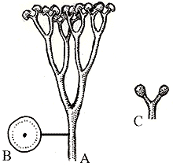
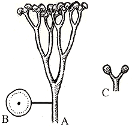{kind=link}
{kind=link}
{kind=link}
{kind=link}
{kind=link}
{kind=link}